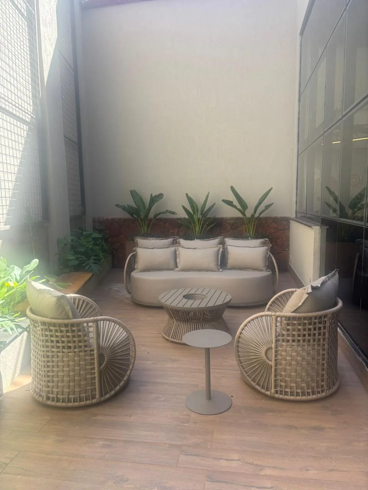
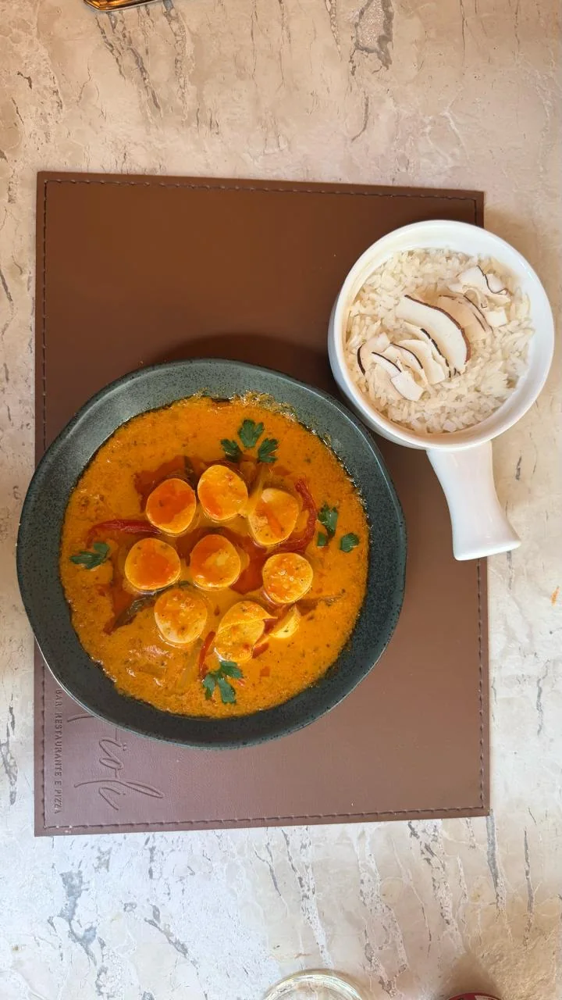
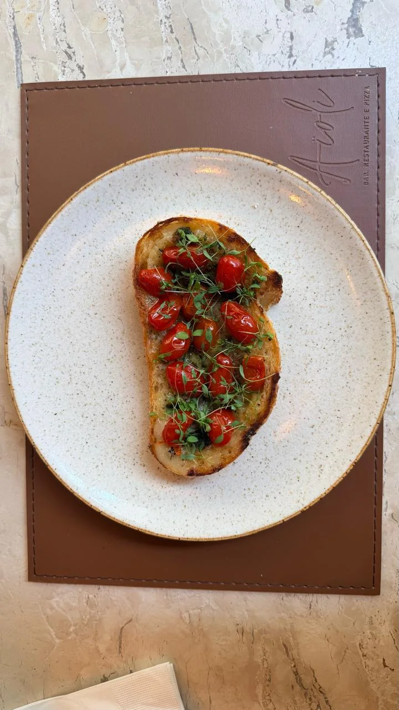
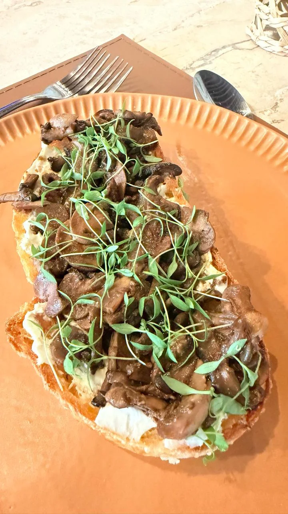
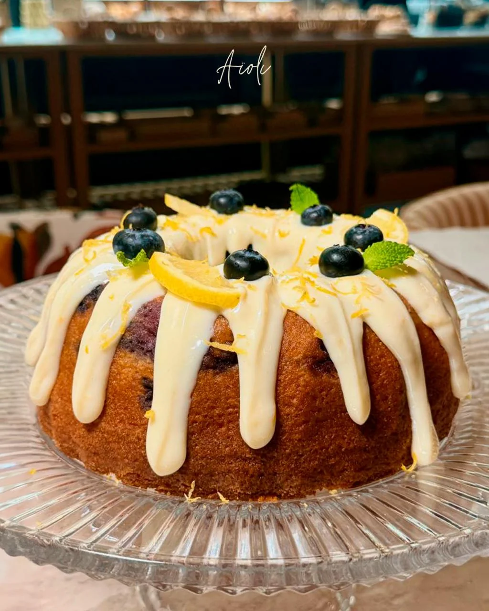
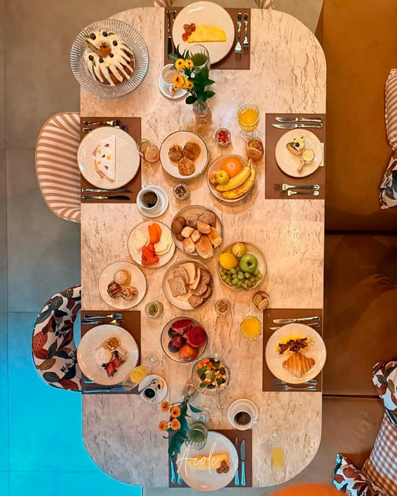
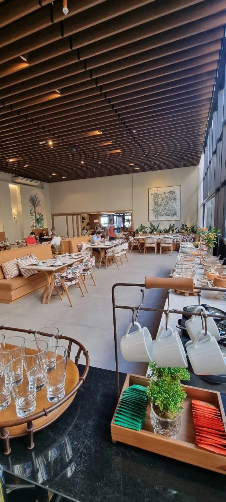

Entradas
Burrata, carpaccio, ceviche, tartar, pastéis e toasts.
Um bistrô contemporâneo para comer bem, desacelerar e viver bons momentos.

O Aïoli Bistrô combina uma cozinha contemporânea e afetiva com um ambiente acolhedor, elegante e descontraído.
Do café da manhã ao almoço, dos encontros sociais aos eventos corporativos, cada experiência é pensada para valorizar sabor, hospitalidade e bons momentos à mesa.
Nossa cozinha
Entradas leves, parrilla, peixes, massas, risotos e sobremesas produzidas diariamente na casa.




Burrata, carpaccio, ceviche, tartar, pastéis e toasts.
Peixes, frango, picanha, filé e salmão com acompanhamentos à escolha.
Moquecas, massas, risotos e pratos autorais da casa.
Sobremesas feitas diariamente na cozinha do Aïoli.

Café da manhã
Buffet completo com pães artesanais, frutas frescas, bolos, seleção de queijos, pâtisserie e outros.

Experiências & eventos
O Aïoli recebe experiências exclusivas, aniversários, encontros sociais, eventos corporativos e formatos personalizados em horários diferenciados.
Também atende o Centro de Convenções do Hotel com opções gastronômicas especiais.
Solicitar uma proposta →“Mais do que servir pratos, queremos criar bons momentos.”
Visite o Aïoli
Endereço
Av. Afonso Pena, 4059 — térreo
Campo Grande — MS
Instagram
@aioli.bistro
Reservas e eventos
Telefone / WhatsApp a confirmar
Horários
Horário oficial a confirmar